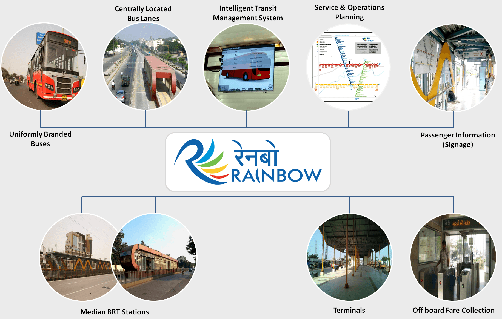
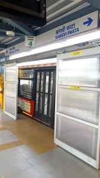
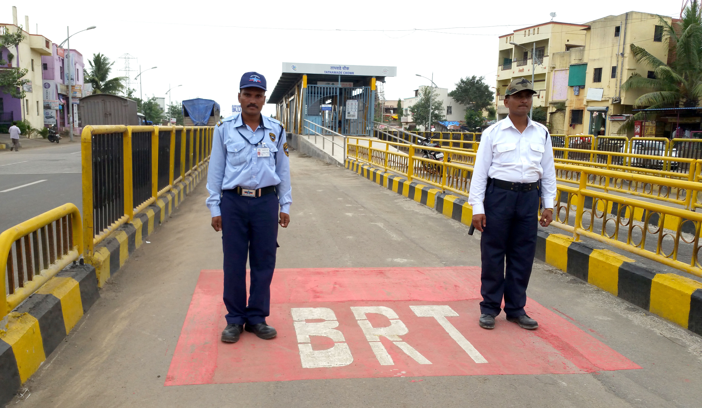
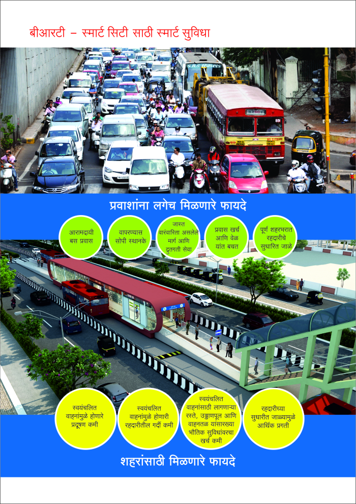

WHY BRT
The Rainbow BRTS is being developed in phases as the sustainable public transport
option for Pune and Pimpri Chinchwad. The Comprehensive Mobility Plans of both Pune
and Pimpri Chinchwad recommend the development of such systems. The rapid increase in
vehicular traffic, increased congestion, expanded city limits and longer travel distances
are some important trends in the twin cities. A high quality public transport is essential
to avoid adverse impacts on the health of people and quality of life.Pune and Pimpri
Chinchwad Municipal Corporations recognise the need for creation of safe, affordable
and world class bus rapid transit infrastructure and services, with focus on commuter
comfort and convenience, integration of modes and information technology. These would
help move towards a liveable and sustainable future
BRTS is an appropriate choice, as
1.BRT is a flexible system.
2.BRT can be built at much lower cost than any other form of mass transit system
with greater service coverage at low cost
3.BRT can carry High Capacity
4.Level Boarding facility reduces boarding time per person from 4 seconds to 0.4
seconds, hence Rapid
5.It provides an integrated network of safer, faster, affordable and more efficient
public transport.
The Rainbow BRTS project is being implemented with the financial support of Jawaharlal
Nehru National Urban Renewal Mission (JnNURM) of the Government of India. Additionally,
specific components of the project in Pimpri Chinchwad are being funded under the
‘Sustainable Urban Transport Project’, which is an initiative of the Ministry of Urban
Development, Government of India and is supported by The World Bank, UNDP & GEF.
FEATURES
1. Buses
2. Bus stations in the BRT Lanes
3. Tickets at stations
4. Level Boarding
5. Automatic Doors
6. Crossings
7. Bus Numbers, Bus Arrival and Station Information
8. Intelligent Transit Management System
9. Security and Traffic Management



BENEFITS
Benefits of Rainbow BRT
Rainbow BRTS aims to provide a few immediate benefits to passengers – Comfortable ride
on the BRTS buses, with shorter waiting times and shorter travel time. The long term
benefits to Pune and Pimpri Chinchwad urban areas expected are:
1.Reduced pollution from motor vehicles
2.Reduced congestion due to motor vehicles
3.Reduced spending on infrastructure for motor vehicles such as flyovers, parking lots
4.Increased economic activity due to improved connectivity
